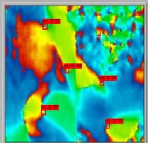
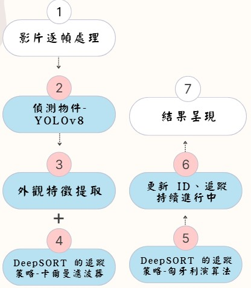
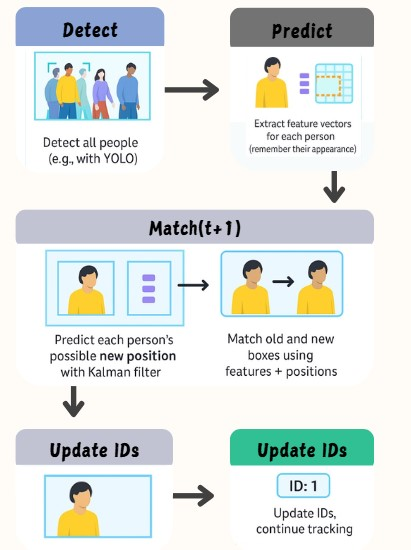

研究成果
可以自動大量快速標註 phase map 圖片與影片中的相位奇異點(Phase Singularity, PS)

進階 - 物件追蹤
研究進行流程


偵測物件-YOLOv8
●精度提升
YOLOv8 在 COCO 等資料集上的表現，比 v7 更準，對小物體與邊緣遮擋的辨識也更好。
●速度快，支援更好
YOLOv8 精度提升，推論速度仍然很快，適合即時應用；並且支援 ONNX、TensorRT、iOS、Android 。
●架構簡化，易於整合
v8 採用 PyTorch 原生實作， 更乾淨、模組化，方便跟 DeepSORT 整合。
●內建功能強:
YOLOv8 本身內建了訓練、驗證、推論、匯出等功能。
●總結:
YOLOv8 比 YOLOv7 更準、更快、更好整合，是目前做目標追蹤的首選。
卡爾曼濾波器與匈牙利演算法介紹
●卡爾曼濾波器
1.用途：預測ps在下一幀的位置
2.作用： a.目標預測 b.狀態更新
3.讓ps移動更順、不會突然消失
●匈牙利演算法
1.用途：找出預測位置以及特徵和偵測框之間最好的配對組合
2.作用：確保每個 ID 都能正確對上對應的ps
3.減少 ID 跳號、錯配的情況
追蹤結果呈現
|